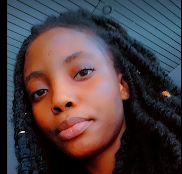

<!DOCTYPE html>
<html>

    <head>
        <meta charset="UTF-8">
        <title> My Resume</title>
        <style>
            body{
                background-color:peachpuff;
                font-family: system-ui,sans-serif;
                font-size:81.25%;

            }
        
        </style>
        
    
    </head>
</html>

<body>
    <div style="text-align: center;"
    <p></p>
    <h1>Precious Usman</h1>
    <h2> Web Developer</h2> 
</div>


   
    <hr/>
 <h2>Summary</h2>
 <h3>I am an enthusiastic booding web developer with a passion for creating clean, user-friendly, and efficient websites. Both front-end and back-end development. In 2024, I began my web development learning journey. I love tackling challenges, learning new technologies, and turning creative ideas into functional, responsive websites. I also have a few years of experience in Customer Success Management..</h3>
 <hr/>
 <h2>Work Experience</h2>
 <h3> Appointment Setter at The VA Group(Remote)</h3>
 <h4>2023-2024</h4>
 <ul>
     <li>Qualifying leads to ensure that they meet certain criteria or are likely to be interested
        in the product or service being offered.</li>
        <li>During the appointment-setting process, developing a good rapport and relationship
        can lay the groundwork for a successful sales pitch.</li>
        <li>Following up with potential clients to verify the appointment, send further materials
        or information, and answer any questions or concerns they might have.</li>
  </ul>
 <h3>Citizen Disability</h3>
    <h4>2021-2023</h4>
    <ul>
        <li>Resolving customer issues via telephone calls.</li>
            <li>Assuring authorization and digital identification for the benefit of clients.</li>
           <li>Assist American individuals who meet the requirements to register with the Social</li>
            <li>Security Administration in order to receive Social Security insurance and disability
            payments.</li>
    </ul>
       <hr/>
       <h2>Skills</h2>
      <style>
         h2{color: rgb(53, 118, 175);}
      </style>
    <ul>
           <li>Excellent verbal communication and active</li>
            <li>listening skills.</li>
            <li>Written Communication</li>
            <li>Effective use of Customer Relation Management</li>
            <li>Data Entry</li>
            <li>Adaptable and able to work efficiently under
               pressure.</li>
               <li>Detail-oriented and organized in maintaining
                records.</li>
               <li>Handling Objections</li>
               <li>Effective use of Ms Products</li>
    </ul>
    <hr/>
    <h2>Other</h2>
    <ul>
   <li><a href=./Hobbies> Hobbies</a></li>
   <li><a href="./Contact">Contact</a></li>
    </ul>
   <hr/>
   <h3>Reference</h3>
   <h4>Available on request</h4>
    <footer>
        <small>
        ©Precious Usman. All Rights Reserved
        </small>
    </footer>

</body>